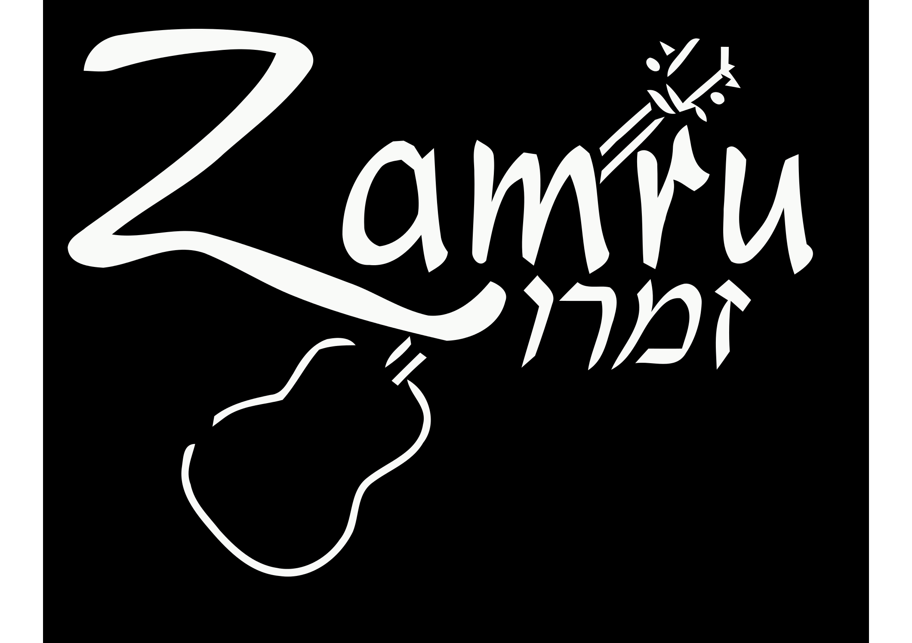

Celebrating Shabbat with heartfelt musical prayer
REGISTER HERE for the next Zamru:
October 23, 2015
Zamru on Campus
6:30pm Kabbalat Shabbat service followed by a catered* vegetarian dinner
Princeton University Campus Club, 5 Prospect Ave., Princeton
*$10/adult. $25/family with children. Free for Princeton undergraduates and graduate students.
Advance registration required.
Zamru held at The Jewish Center, 435, Nassau Street, Princeton
6:30pm Kabbalat Shabbat Service followed by a vegetarian potluck**
November 6, 2015
December 4, 2015
January 29, 2016
March 4, 2016
March 25, 2016
April 8, 2016
May 6, 2016
June 10, 2016
**No fee for the dinner, but everyone (except Princeton students!) please bring a vegetarian main dish, generously sized (labeled and with serving utensils). Please volunteer to be on the Dessert Team (which entails bringing a dessert in addition to your main dish).